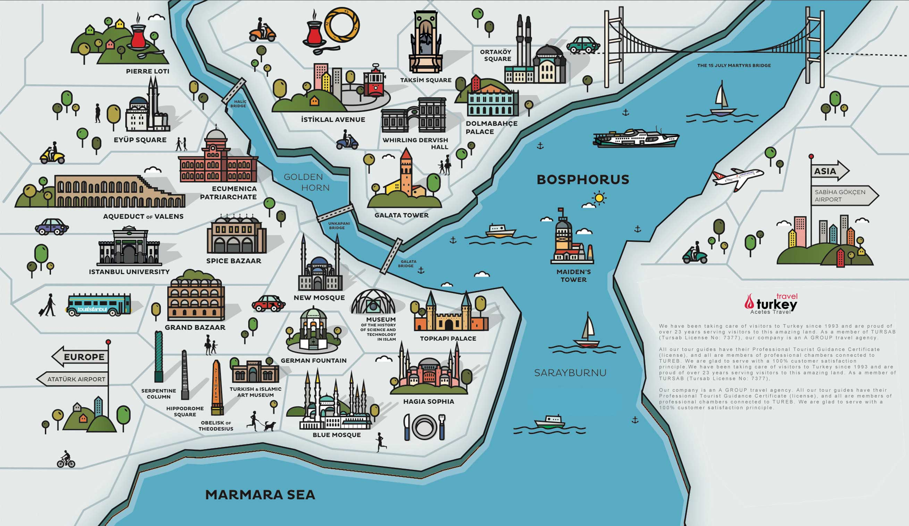
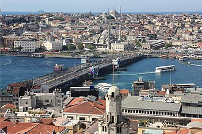
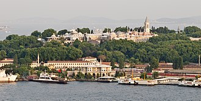
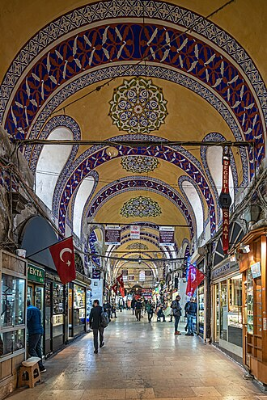
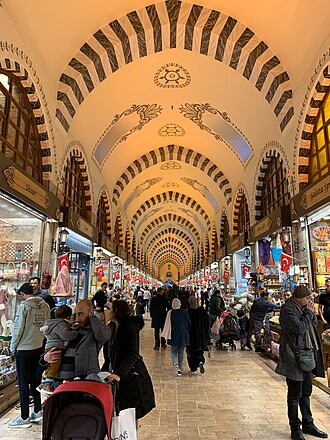
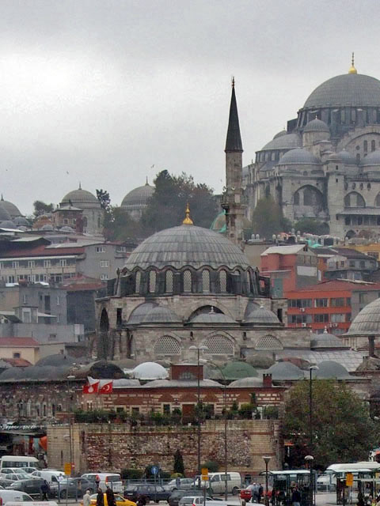
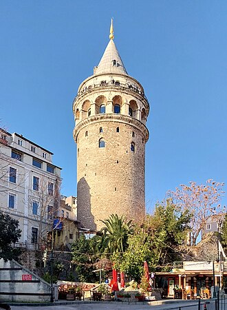

Chapter 1: Turkey — Istanbul
Introduction & History
Istanbul is a city that sits on two continents, Europe and Asia, divided by the Bosphorus Strait. Originally founded as Byzantium by Greek colonists in 657 BCE, it was later renamed Constantinople by the Roman Emperor Constantine the Great in 330 CE. For over a thousand years, it served as the glorious capital of the Byzantine Empire, a center of Christianity and classical learning. In 1453, it was famously conquered by Sultan Mehmed II, becoming the beating heart of the huge Ottoman Empire and the seat of the Islamic Caliphate.
Map

Essential Things to Know
1. The Istanbulkart (Public Transport)
THE ONE CARD YOU ABSOLUTELY NEED TO GET: The Istanbulkart
This is not for museums, but it will save both your time and your money. It is the public transport card.
What it is: A rechargeable yellow/red or blue card.
What you need it for:
- For the "Airport Pickup Mission" (M4 Metro from Sabiha Gökçen and the Marmaray train).
- For the T1 Tram (which takes you from Sultanahmet to Eminönü or the Grand Bazaar).
- And above all... For the Bosphorus Cruise! If you take the public Şehir Hatları ferries from the Eminönü pier, you can tap the Istanbulkart at the gates and pay just a tiny amount. You do not even need to buy a paper ticket.
-
How it works: Buy it as soon as you arrive at the airport metro station from the yellow machines (Biletmatik). The empty card costs around €2-3. Load it with some cash (for example 300-400 Turkish Lira to start) and you can even use ONE card for both of you: you tap first and enter, then hand it to Ayoub right behind you and he taps and enters.
Final strategy summary: -
No museum pass.
- Pay for each museum separately at the ticket machines or counters when you arrive.
- Buy an Istanbulkart, top it up, and use it for all public transport and for the Bosphorus ferry.
2. How to Handle Money (Cash vs Cards)
Inflation: The Turkish Lira (TL) is very unstable. Do not exchange money in Italy, you would lose far too much value.
Where to exchange: Change only €15-20 at the airport (the rate is terrible, but you will need some small cash for the bus or to top up your first Istanbulkart). Exchange the rest of your cash in the city center, especially around the Grand Bazaar or Sirkeci, where the Döviz exchange offices usually offer the best rates.
Credit cards: You can pay by card almost everywhere (even for a coffee or a €3 kebab). Carry cash only for street vendors, such as simit sellers, and for very small markets.
3. Internet (Essential for the "Airport Pickup Mission")
Ruggero arrives at IST and Ayoub arrives at SAW. You will need to message each other on WhatsApp to meet up.
The problem: Free Wi-Fi in airports and around Istanbul often requires an SMS code... but on Italian phone numbers the text message does not always arrive.
The solution: Before leaving Italy, download an eSIM app (such as Airalo or Holafly) and buy a data package for Turkey (usually around €5-8 for a few GB). As soon as you land, activate the eSIM and you will have mobile internet immediately without depending on Turkish Wi-Fi.
4. The Taxi Nightmare in Istanbul
Taxi drivers in Istanbul are famous for being very "creative" with tourists.
The golden rule: Never hail a random yellow taxi on the street if you can avoid it. If you do, insist that the meter is turned on ("Taksimetre, please"). If the driver says it is broken or gives you a high fixed fare, get out and close the door.
What to use: Download Uber or the local BiTaksi app. They work very well: you book a yellow taxi through the app and you can see the route and estimated price in advance, which makes scams much harder.
5. Mosque Etiquette (The Socks!)
Since you will enter several mosques (Blue Mosque, Rüstem Pasha Mosque, and possibly Ayoub for prayer), there is one practical rule nobody thinks about: socks.
You must enter a mosque without shoes (there are shoe racks at the entrance). The carpets are walked on by thousands of people every day. Wear clean socks, preferably dark or thick ones, for hygiene and comfort.
Also, mosques (except the tourist access area of Hagia Sophia) close to visitors for about 30-45 minutes around the five daily prayers. If you arrive and they do not let you in, just wait outside for half an hour and they will reopen.
6. Two Final Warnings
Water: Never drink tap water in Istanbul. It is not toxic, but it is heavily chlorinated and old, and it can upset your stomach. Always buy sealed bottles of water (they cost very little in minimarkets).
The shoeshine scam: This is a classic Istanbul trick, especially on the Galata Bridge. A shoeshiner walks in front of you and "accidentally" drops his brush. You kindly pick it up and hand it back. He thanks you warmly, insists on cleaning your shoes as a "gift"... and then demands €10 or €20 while making a scene if you refuse. If someone drops a brush, ignore it and keep walking.
DAY 1: Friday, April 3rd — The Empire, the Water, and Relaxation
Daily Overview
You'll both be tired from the overnight travel and the long airport transfers. The morning will be kept very easy, focusing on food and a relaxed walk, leaving the underground exploration for the afternoon before a strategic nap.
Schedule
- 03:40 - 08:00 | Mission: Airport Pickup ✈️:
- Ruggero lands at IST (03:40).
- Takes the Havaist bus (line HVIST-13) from IST to SAW airport (takes about 1.5 - 2 hours).
- Meets Ayoub, who lands at SAW (06:45) and will exit arrivals around 07:30-07:45.
- 08:00 - 10:30 | Transit SAW to Hotel (The Buffer) 🚇:
- Take the Metro M4 from Sabiha Gökçen.
- Change to the Marmaray train (at Ayrılık Çeşmesi station).
- Get off near Fatih/Sultanahmet.
- Short walk to the hotel. (This generous timeframe accounts for traffic, waiting for trains, and walking).
- 10:30 - 11:30 | Luggage Drop & Brunch 🍳:
- Arrive at Pera Apart and leave your bags (check-in is later).
- Sit down immediately for a massive, well-deserved Turkish breakfast (Kahvaltı) nearby to recover from the flights.
- 11:30 - 12:30 | Sultanahmet Square & Hippodrome 🏛️:
- A slow, relaxed walk around the Obelisk of Theodosius and the Serpent Column to stretch the legs after the flights. It is right next to the hotel.
- 12:30 - 14:00 | Friday Prayer & Relax 🕌:
- For Ayoub: He can join the Jumu'ah (Friday prayer) at the Blue Mosque or Hagia Sophia (usually starts around 13:00/13:15). A highly emotional and spiritual moment.
- For Ruggero: Relax in Sultanahmet Park, drink some Turkish tea, or grab a quick street-food snack.
- 14:30 - 15:30 | Basilica Cistern 💧:
- (Book tickets for 14:30!).
- Walk down into Istanbul's underground. Perfect time while the post-prayer crowds are still dispersing outside. Magical atmosphere.
-
15:30 - 17:30 | Hotel Check-in & Nap 🛏️:
- Walk back to Pera Apart.
- Check into the room, take a hot shower, and sleep for about 1.5 - 2 hours. This is crucial so you do not crash in the evening!
-
17:30 - 18:00 | Wake up & Transfer to Eminönü 🌅:
- You wake up from your hotel nap.
- Take the T1 Tram and get off at Eminönü (the square by the water).
- Walk toward the ferry piers (you will spot them immediately, with the huge boats).
- Look for the booth with Turyol written on it (or Şehir Hatları Boğaz Turu).
- Take out the Turkish Lira, ask for "Two tickets for the Bosphorus Tour," pay (roughly the equivalent of €5/6), and board the boat leaving in about 10 to 15 minutes.
- 18:00 - 19:30 | Bosphorus Sunset Cruise ⛴️:
- Enjoy the golden hour on the water between Europe and Asia on the public ferry.
- 19:45 - 21:30 | Galata Bridge & Dinner 🍽️:
- After getting off the ferry, walk along the Galata Bridge among the fishermen.
- You can have dinner at the seafood restaurants underneath it, or cross over to Karaköy for a more modern vibe and try a Balık Dürüm (fish wrap).
- 22:00 | Return to the hotel and rest:
- Take the T1 tram back to Sultanahmet or walk if you're up for it.
Detailed Context
Sultanahmet Square & The Hippodrome

Historical Context:
Long before the construction of the surrounding mosques, this elongated public square was the Hippodrome of Constantinople, the absolute center of Byzantine civic life for over a thousand years. Originally laid out by Roman Emperor Septimius Severus in 203 AD and massively expanded by Constantine the Great in 324 AD, the arena could accommodate an estimated 100,000 spectators. It was not merely a venue for chariot races; it was the political theater of the empire. Factions known as the "Blues" and the "Greens" functioned as sports teams, street gangs, and political parties combined. In 532 AD, this very square was the site of the Nika Riots, a massive rebellion against Emperor Justinian that resulted in the killing of 30,000 citizens right on the Hippodrome floor.
The Surviving Monuments:
- The Obelisk of Theodosius (Dikilitaş): This is the oldest monument in Istanbul, but it was not made here. It was carved from pink granite in Egypt around 1490 BC for Pharaoh Thutmose III and originally stood at the Temple of Karnak in Luxor. Emperor Theodosius the Great had it shipped to Constantinople in 390 AD. Surprisingly, only the top third of the original obelisk survived the journey. The hieroglyphs—praising the Egyptian sun god Horus—are in perfect condition. Beneath the granite is a marble base added by the Byzantines, featuring incredibly detailed relief carvings of Emperor Theodosius and his court watching the chariot races from their imperial box, offering a rare glimpse into 4th-century fashion and hierarchy.
- The Serpent Column (Yılanlı Sütun): A spiral of green bronze, this is one of the most important artifacts from classical antiquity. It was cast to celebrate the victory of the united Greek city-states over the Persian Empire at the Battle of Plataea in 479 BC. Originally placed at the Temple of Apollo in Delphi, it featured three intertwined snake heads supporting a golden bowl. Constantine the Great ordered it brought to his new capital. The golden bowl was stolen long ago, and the snake heads were allegedly smashed off by a drunk Polish nobleman in the 1700s, though one upper jaw was later found and is now in the Archaeological Museum.
- The Walled Obelisk (Örme Dikilitaş): Standing at the southern end, this rough stone pillar was originally covered entirely in glittering gilded bronze plaques. During the disastrous Fourth Crusade in 1204, Western European crusaders sacked the city and ruthlessly stripped the obelisk, melting the bronze down to mint coins. It has stood bare ever since.
- The German Fountain (Alman Çeşmesi): At the northern edge of the square stands a highly ornate, octagonal domed fountain. It was gifted to the Ottoman Empire by the German Emperor Wilhelm II to commemorate his visit to Istanbul in 1898. Constructed in Germany and transported piece by piece, its interior dome is covered in golden mosaics featuring the cypher of Wilhelm II intertwined with the tughra (imperial signature) of Sultan Abdul Hamid II, symbolizing a strategic political alliance.
The Basilica Cistern (Yerebatan Sarnıcı)

Historical Context:
Beneath the bustling streets of the historical peninsula lies a vast underground system of water reservoirs, of which the Basilica Cistern is the largest and most magnificent. Commissioned by Byzantine Emperor Justinian I in 532 AD—immediately following the destructive Nika Riots—it was built underneath a large public square called the Stoa Basilica. Its purpose was highly strategic: to provide a secure and filtered water supply to the Great Palace of Constantinople and the surrounding buildings, particularly in the event of a siege. It has a capacity of 100,000 tons of water, brought via aqueducts from the Belgrade Forest, 19 kilometers away. After the Ottoman conquest in 1453, the cistern was largely forgotten. It was rediscovered in the 1540s by Petrus Gyllius, a French scholar who investigated rumors of locals dropping buckets through holes in their floors to draw up fresh water and catch fish.
Architectural Marvels & Hidden Details:
- The Forest of Columns: The huge space measures 138 meters by 65 meters and is supported by exactly 336 marble columns, arranged in 12 rows of 28. The atmosphere is cathedral-like. Because the cistern was built quickly, materials were taken from ruined pagan temples across the Roman Empire. Consequently, the columns are a mix of different architectural styles, featuring a mix of Ionic, Corinthian, and Doric capitals, crafted from different types of marble and granite.
- The Medusa Heads: In the far northwestern corner, the bases of two columns are formed by huge, beautifully carved heads of Medusa. One is placed completely upside down, and the other is turned sideways. While romantic legends claim they were positioned this way to negate the Gorgon’s deadly look, historians suggest a more pragmatic reason: they were simply giant blocks of pagan stone looted from a late-Roman building, and turning them sideways provided the exact height needed to support the columns above them.
- The Column of Tears (The Hen’s Eye Column): Midway through the cistern stands a unique column carved with repeating shapes that resemble weeping eyes or teardrops. Ancient texts suggest this column was brought from the Forum of Theodosius. Local lore claims the tearful carvings represent a tribute to the hundreds of enslaved individuals who perished in the damp, dark conditions while constructing the massive underground reservoir.
The Bosphorus Strait & Galata Bridge

Historical Context:
The geography of Istanbul dictates its history. The city is divided by two major bodies of water: the Golden Horn (a deep natural harbor dividing the historic Islamic peninsula from the merchant district of Galata) and the mighty Bosphorus Strait (a 32-kilometer-long channel that connects the Black Sea to the Sea of Marmara, forming the absolute continental boundary between Europe and Asia). Control of the Bosphorus meant control of global trade between East and West.
Architectural Marvels & Hidden Details:
- The Galata Bridge: Spanning the Golden Horn, this bridge is the cultural hinge of the city. Since the 19th century, crossing the bridge meant moving from the traditional, imperial center of Sultanahmet into the modern, European-influenced district of Beyoğlu. Today, the bridge features two levels. The upper level is perpetually lined with hundreds of local fishermen casting their lines into the currents, regardless of the weather. The lower level is entirely occupied by fish restaurants, offering a lively, chaotic dining experience right at the water's surface.
DAY 2: Saturday, April 4th — Ottoman Splendor, Relics, and the Modern City
Daily Overview
Today is for walking and exploring. You have the whole day and evening before heading to the airport.
Schedule
- 08:00 - 08:45 | Wake up & Breakfast: Ready and energized.
- 09:00 - 11:30 | Topkapi Palace 👑:
- (About 2.5 hours).
- Walk in right at opening time.
Tip: Special note for Ayoub: Inside, there is the "Chamber of Holy Relics" (Kutsal Emanetler), which houses the mantle, the sword, and even hairs from the Prophet Muhammad's beard. It's a highly important pilgrimage site, and he will appreciate it very much. - 11:30 - 13:00 | Hagia Sophia & Blue Mosque 🕌:
- Since they were closed for prayer yesterday morning, visit them today.
- They are located right next to the Topkapi Palace.
- (Keep in mind that Hagia Sophia recently introduced an entrance fee for foreign tourists. The entrance for praying is different).
- 13:00 - 14:30 | Grand Bazaar & Lunch 🏺:
- Walk (or take the T1 Tram for a few stops) and get lost in the narrow streets of the Grand Bazaar.
- Grab something to eat inside or nearby (great spots for doner kebab around here).
- 14:30 - 15:30 | Spice Bazaar & Rüstem Pasha Mosque ✨:
- Walk down towards the water (Eminönü area) for the scents of the Spice Bazaar.
- Right outside is the Rüstem Pasha Mosque; it's small, hidden above the shops, and covered in beautiful blue Iznik tiles. Much less crowded than the Blue Mosque, and truly stunning.
- 16:00 - 18:30 | Galata Tower, Istiklal & Taksim 🚶♂️:
- Walk across the Galata Bridge.
- To avoid the steep uphill walk, take the historic funicular (Tünel) from Karaköy up to Beyoğlu (Istiklal Avenue).
- Walk along the lively Istiklal Avenue until reaching Taksim Square. Here you will feel the heart of modern and European Istanbul.
- 19:00 - 20:30 | Relaxed Dinner 🍽️:
- Grab something to eat in the Taksim area, or
- take the F1 funicular down to Kabataş and then the T1 Tram back towards Fatih/Sultanahmet for the last Turkish dinner of this stopover.
- 21:00 | Back to the Hotel for luggage 🧳:
- Return to Pera Apart to pick up the bags you left in storage.
- 21:30 | Departure to the Airport (IST) 🚕:
- Without any rush, call a taxi (or use the Uber/BiTaksi app) or take the Havaist bus from Sultanahmet area.
- IST airport is quite far and takes about 1 hour by car. By leaving at 21:30, you'll arrive around 22:30.
- Your flight (TK68) is at 01:55 AM. You'll have over 3 hours of margin to check in, go through passport control, and enjoy the huge (and beautiful) Istanbul Airport in total relaxation.
Detailed Context
Topkapı Palace & The Holy Relics

Historical Context:
Unlike European palaces, which are typically massive single structures, Topkapı is a huge, maze-like complex of courtyards, pavilions, lush gardens, and fortified walls. Built by Mehmed the Conqueror in 1459, its layout is designed to mirror an ancient Turkic nomadic tent encampment, but rendered in permanent stone and marble. For 400 years, it was the administrative, educational, and artistic nerve center of the Ottoman Empire, housing the Sultan, his court, the massive Imperial Harem, and up to 4,000 residents.
Architectural Marvels & Hidden Details:
- The Imperial Council (Divan-ı Hümâyun): Located in the Second Courtyard, this is where the Grand Vizier and state ministers met to govern an empire stretching from Algiers to Baghdad. High up on the wall above the Grand Vizier’s seat is a small, golden-grilled window. The Sultan could secretly sit behind this grate to listen to the council without being seen. The constant threat of the Sultan’s invisible presence ensured absolute honesty and loyalty during debates.
- The Chamber of Holy Relics (Kutsal Emanetler): This suite of rooms in the Third Courtyard is the spiritual climax of the palace. Following the Ottoman conquest of Egypt and the Hijaz (Mecca and Medina) in 1517 by Sultan Selim I, the title of Caliph passed to the Ottoman Sultans. To justify this claim, the most sacred relics of Islam were brought to Topkapı. The heavily guarded, beautifully tiled chambers house the Holy Mantle (Hırka-i Şerif) of the Prophet Muhammad, his battle swords, a letter he dictated, soil from his grave, a footprint, and hairs from his beard. Additionally, the rooms hold artifacts attributed to earlier prophets, including the staff of Moses, the sword of David, and the cooking vessel of Abraham. To honor the holiness of the relics, a tradition was established where Hafız (Islamic scholars) recite the Quran continuously in this room, 24 hours a day, a practice that continues to this moment.
- The Fourth Courtyard: The most private area of the Sultan, featuring pleasure pavilions built to commemorate military victories. The absolute highlight is the Baghdad Pavilion, adorned in blue-and-white tiles. The marble terrace here offers an clear, breathtaking view where the Bosphorus Strait meets the Golden Horn and the Sea of Marmara.
- The Imperial Harem: Far more than a romantic legend, the Harem was a guarded political city within the palace walls. It housed the Sultan’s family, his mother (the enormously powerful Valide Sultan), wives, concubines, children, and the black eunuchs who controlled access. The long sequence of courtyards, private apartments, baths, tiled reception halls, and hidden corridors reveals how power in the Ottoman world also flowed through domestic space, passing power to the next ruler, and court secrets.
- The Gate of Felicity and the Third Courtyard: Passing through this ceremonial threshold meant entering the Sultan’s innermost realm. Here were the Audience Chamber, the palace school for elite pages, and the treasury of imperial authority. This was where foreign ambassadors were received in carefully staged silence and where only the closest servants of the ruler could pass.
- The Palace Kitchens and Daily Scale: The giant kitchens of Topkapı fed thousands of residents every day, from statesmen to guards to servants. Their chimneys still dominate the skyline of the Second Courtyard. Beyond the culinary scale, the kitchens illustrate the sheer size of the palace machine and the sophistication of Ottoman court life, including specialized sweets, sherbet preparation, and the strict hierarchy of service.
Hagia Sophia (Ayasofya)

Historical Context:
Hagia Sophia (Holy Wisdom) is probably one of the most historically significant buildings ever constructed by human hands. The current structure is actually the third church on this site, commissioned by Byzantine Emperor Justinian I in 532 AD. Determined to build the greatest basilica in the Christian world, Justinian hired two brilliant mathematicians, Anthemius of Tralles and Isidore of Miletus. It was completed in an astonishingly short five years. Upon entering the finished cathedral, Justinian supposedly looked up at the dome and proclaimed, "Solomon, I have outdone thee!" For nearly a thousand years, it stood as the largest cathedral on Earth.
In 1453, when Sultan Mehmed II conquered Constantinople, he rode directly to Hagia Sophia. Deeply moved by its decaying beauty, he immediately declared it a mosque, saving it from destruction. It served as the principal mosque of the Ottoman Empire until 1935, when Mustafa Kemal Atatürk converted it into a secular museum. In 2020, its status was reverted to a functioning mosque.
Architectural Marvels & Hidden Details:
- The Floating Dome: The central dome spans 31 meters across and rises 55 meters above the floor. It revolutionized architecture by utilizing "pendentives" (curved triangular sections) to place a massive circular dome over a square room. A ring of 40 arched windows circles the base of the dome; when sunlight hits these windows, the supports seem to disappear, making the huge roof appear as if it is suspended from heaven by a golden chain.
- The Dueling Religions: The interior is a profound visual clash of two world empires. Colossal black circular wooden medallions, inscribed with the names of Allah, Muhammad, and the first Caliphs in gold Ottoman calligraphy, hang from the galleries. Directly behind them, in the semi-dome above the apse, sits a glittering 9th-century Byzantine mosaic of the Virgin Mary holding the infant Jesus.
- The Seraphim Angels: High up on the four pendentives supporting the dome are massive mosaics of six-winged seraphim. For centuries during the Ottoman period, their faces were covered with star-shaped metallic masks. During modern restorations, one of the angelic faces was uncovered and now looks down upon the nave.
- The Omphalion: On the ground floor, there is a distinct square section of carefully laid circular colored marbles. This is the Omphalion ("navel of the world"). It marks the exact spot where the thrones of the Byzantine Emperors were placed during their coronation ceremonies.
The Blue Mosque (Sultan Ahmed Mosque)

Historical Context:
Constructed between 1609 and 1616, the mosque was the wildly ambitious vision of the young Sultan Ahmed I. He became the ruler at the age of 13 and sought to build an Islamic monument of such overwhelming scale and beauty that it would rival, and perhaps surpass, the thousand-year-old Hagia Sophia standing directly opposite it. Designed by the architect Sedefkar Mehmed Agha (a star pupil of the legendary Mimar Sinan), it is considered the supreme culmination of two centuries of Ottoman mosque development, marking the end of the classical architectural period.
Architectural Marvels & Hidden Details:
- The Minaret Controversy: The exterior is famous for its cascading domes and its six slender minarets. At the time of its construction, this was a massive scandal. Only the Haram Mosque in Mecca (the holiest site in Islam) had six minarets. Sultan Ahmed was accused of supreme arrogance. To quell the outrage from the Islamic world, the Sultan financed the construction of a seventh minaret for the mosque in Mecca to restore its importance.
- The "Blue" Interior: The popular name "Blue Mosque" comes from the interior decoration. The lower walls and upper galleries are adorned with more than 20,000 handmade ceramic tiles from the city of Iznik. These tiles feature over 50 different detailed tulip designs, along with cypresses, roses, and fruits. The dominant blue pigment catches the light filtering through the 260 stained-glass windows, giving the massive prayer hall an magical, oceanic glow.
- The Elephant Pillars: The incredibly heavy central dome is supported by four huge, fluted columns that measure 5 meters in diameter. Due to their massive, sturdy appearance, they are affectionately referred to as the "Elephant Pillars."
- Ostrich Eggs and Spiders: Suspended from the ceiling are massive, low-hanging circular chandeliers. Historically, mixed among the glass oil lamps, the architect placed dozens of ostrich eggs. The eggs emit a subtle scent—invisible to humans but highly unpleasant to spiders and insects—ensuring the high, unreachable corners of the mosque remained free of cobwebs.
The Grand Bazaar (Kapalıçarşı)

Historical Context:
Often cited as one of the world's first shopping malls, the Grand Bazaar is a huge medieval economic center. Its construction was ordered by Sultan Mehmed II in 1455, merely two years after conquering the city. The goal was to stimulate the economy, generate wealth for the empire, and fund the construction of the Hagia Sophia's new Islamic endowments. Over the centuries, it expanded from two central warehouses into a huge, chaotic, and beautiful maze containing 61 covered streets and over 4,000 shops.
Architectural Marvels & Hidden Details:
- The Bedestens: The heart of the bazaar consists of the Old Bedesten (Cevahir Bedesteni) and the Sandal Bedesten. These were heavily fortified stone halls with thick iron doors that locked at night. Historically, this is where the most precious goods—gold, diamonds, weapons, and silk—were traded and protected by armed guards. The thick stone arches and high domed ceilings of these original sections are distinctly different from the rest of the market.
- The Guild System: Historically, the streets of the bazaar were strictly organized by the Ottoman guild system. Each street sold only one specific type of product (e.g., the street of the gold polishers, the street of the carpet weavers, the street of the copper smiths). While modern commerce has blurred these lines, the street names still reflect this ancient organization.
- The Painted Arches: Due to the chaos at eye level, many miss the beauty above. The high, vaulted ceilings of the main streets are painted in detailed, brightly colored Ottoman floral patterns and geometric designs, particularly along the main artery, Kalpakçılar Caddesi.
The Spice Bazaar (Mısır Çarşısı)

Historical Context:
Constructed in 1660, this L-shaped market was built as an extension of the adjacent New Mosque (Yeni Cami) complex. In classical Ottoman urban planning, markets were built next to mosques so that the rent collected from the shopkeepers could be used to fund the mosque's upkeep and its charitable institutions (hospitals and soup kitchens). It is locally known as the "Egyptian Bazaar" (Mısır Çarşısı) because its construction was financed entirely by taxes placed on imported goods from the Ottoman province of Egypt. It served as the final end of the Silk Road and the spice routes from India and Arabia.
Architectural Marvels & Hidden Details:
- The Sensory Experience: The interior is an overwhelming experience for the senses. The high vaulted ceilings trap the heavy aromas of hundreds of spices. Pyramids of vivid red sumac, golden turmeric, and green pistachios line the stalls alongside hanging strings of dried eggplants, medicinal roots, and towering displays of Turkish Delight (Lokum) flavored with rose water and pomegranate.
- The Exterior Market (Eminönü): While the interior is beautiful, the real, chaotic life of the city happens in the narrow, incredibly crowded streets immediately outside the covered market walls. This is where locals buy fresh olives, massive wheels of cheese, cured meats (Pastırma), and freshly ground Turkish coffee. The smell of roasting coffee coming from the historic Kurukahveci Mehmet Efendi shop is a permanent fixture of the area.
Rüstem Pasha Mosque

Historical Context:
Hidden in plain sight amidst the frantic commercial district of Eminönü, this mosque is considered one of Istanbul’s greatest secret treasures. It was designed in 1563 by the legendary Ottoman architect Mimar Sinan. The patron of the mosque, Rüstem Pasha, was the Grand Vizier and the son-in-law of Sultan Suleiman the Magnificent. Rüstem was famously wealthy, highly corrupt, and deeply unpopular with the public. To avoid angering the Sultan by building a mosque that was too large and showy, he instead chose to build a smaller mosque but decorated it with an amazing level of internal luxury.
Architectural Marvels & Hidden Details:
- The Elevated Architecture: Space in the commercial district was limited and highly valuable. To solve this, Sinan designed the mosque to sit on a raised platform, completely elevated above street level. The ground floor consists entirely of vaulted shops. The rent from these shops funded the mosque. Finding the entrance involves climbing dark, narrow stone staircases hidden between the storefronts, which suddenly open into a peaceful, light-filled upper courtyard.
- The Zenith of Iznik Art: The interior is an absolute masterpiece of Ottoman tilework. No other mosque in the world features such a dense, overwhelming concentration of Iznik ceramic tiles. Every wall, column, and the grand mihrab is covered in floral and geometric patterns, featuring over 80 different variations of the tulip motif.
- The "Tomato Red" Enigma: Look very closely at the tiles. Interspersed with the deep cobalt blues and emerald greens is a very specific, slightly raised, brilliant "tomato red" (kızıl) color. In the 16th century, producing this exact, vibrant red ceramic glaze was a closely guarded state secret and incredibly expensive. Its heavy use throughout the mosque was Rüstem Pasha's way of flaunting his huge wealth.
Galata Tower (Galata Kulesi)

Historical Context:
Standing high on a hill overlooking the Golden Horn, the Galata Tower is one of the most recognizable silhouettes in the city skyline. It was built in 1348 by the Genoese—a powerful Italian maritime republic that had established a semi-independent trading colony in this district, historically known as Pera. They named it Christea Turris (The Tower of Christ). Originally, it was the top of a massive fortified wall system designed to protect the Italian merchants from the Byzantines across the water. During the Ottoman era, the tower was used as a prison, a naval observatory, and finally, a fire-spotting watchtower, given its clear view over the wooden houses of the city.
Architectural Marvels & Hidden Details:
- The Structure: The tower stands 67 meters tall, but its most impressive feature is the sheer thickness of its stone walls, which are nearly 4 meters thick at the base. The conical roof was destroyed by storms and fires several times over the centuries and was only permanently restored to its original Genoese design in the 1960s.
- The Legend of the Birdman: The tower is the site of one of the most famous legends in Ottoman history. In 1638, an Ottoman scholar and aviator named Hezarfen Ahmed Çelebi allegedly constructed a pair of artificial gliding wings. According to the historian Evliya Çelebi, Hezarfen jumped from the balcony of the Galata Tower, caught the wind, flew completely across the Bosphorus Strait, and landed safely in the Asian district of Üsküdar, a journey of over 3 kilometers. Sultan Murad IV was so terrified by this feat that he rewarded Hezarfen with a sack of gold and then immediately exiled him to Algeria.
Istiklal Avenue & Taksim Square

Historical Context:
If Sultanahmet is the heart of the ancient empire, Taksim and Istiklal are the pulse of the modern Republic. During the 19th century, the Ottoman Empire sought to modernize and look toward the West. The district of Pera (now Beyoğlu) became the home of European diplomats, wealthy Levantine merchants, and international banks. The main artery, known then as the Grande Rue de Péra and now as Istiklal Avenue (Independence Avenue), became a glamorous, cosmopolitan boulevard rivaling those of Paris or Vienna.
Architectural Marvels & Hidden Details:
- Taksim Square's Origins: The word "Taksim" means "division" or "distribution." In the 1730s, an Ottoman stone reservoir was built at the edge of this square. It was the crucial point where water lines arriving from the northern forests were divided and distributed to the various neighborhoods of the city.
- The Republic Monument: Standing at the center of Taksim Square, this monument was sculpted by Italian artist Pietro Canonica in 1928. It tells a two-sided story. The north-facing side depicts Mustafa Kemal Atatürk in full military uniform leading his troops during the War of Independence. The south-facing side shows him in sharp, modern Western civilian clothing, symbolizing the foundation of the secular, forward-looking Republic of Turkey.
- Istiklal's Architecture: Walking down the 1.4-kilometer pedestrian avenue, the architecture completely shifts from domes and minarets to massive, ornate 19th-century Neoclassical, Beaux-Arts, and Art Nouveau facades. These buildings originally housed foreign embassies, luxury hotels for passengers of the Orient Express, and grand theaters.
- The Historic Passages (Pasajlar): Hidden behind the grand facades are ornate, glass-roofed arcades. The most famous is the Çiçek Pasajı (Flower Passage). Originally a theater that burned down, it was rebuilt as a lavish arcade. Following the 1917 Russian Revolution, impoverished noble Russian women who fled to Istanbul sold flowers here, giving the passage its name. Today, it is filled with historic Meyhanes (traditional Turkish taverns).
- The Nostalgic Tram: Cutting a path through the sea of millions of pedestrians is the iconic bright red vintage tram (the T2 line). Reintroduced in the 1990s, it slowly rattles down the center of the avenue, serving as a charming, moving monument to the district's elegant past.